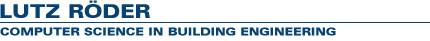

I'm working as student assistant at the professorship Lehrstuhl für Informatik im Bauwesen at the Bauhaus-Universität Weimar.
I focus on new concepts for CAE and FEM system development and give a seminar teaching C++ programming.
Projects
Beamax - Structural analysis of continous beams
Femax - Component system for structural analysis
CAL SD - Educational structural engineering program
|